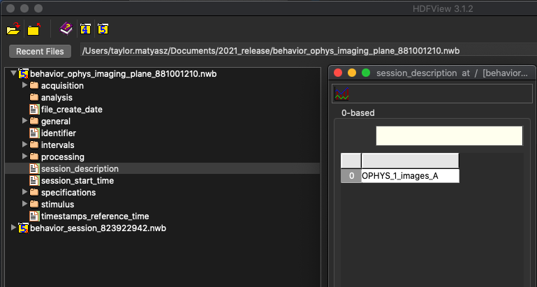
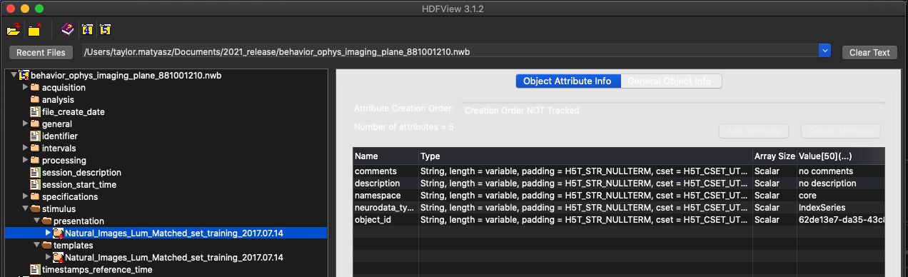
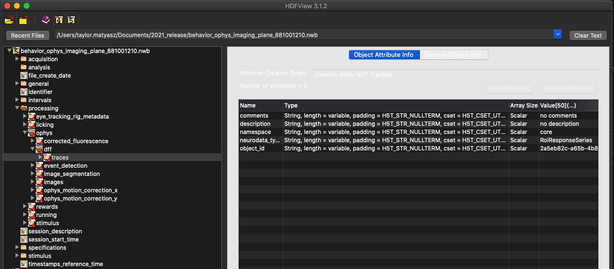

Organization of a Visual Behavior NWB file¶
The Allen Institute’s Brain Observatory data sets include data from 2-photon microscope recordings including image segmentation, motion correction and fluorescence traces. These data are separated into two different types of files - files with just data about specimen behavior and files which include this _and_ optical physiology data. It also includes information about the visual stimuli presented during the recording. This information is packaged in the NWB format. Here is a brief description how the data is stored in the NWB file.
Browsing the file¶
The NWB format is a self-documenting file format that is designed to store a wide range of neurophysiology data. Structurally, NWB is nothing more than an HDF5 file that has data organized in a particular way. For example, the format has a dedicated location for storing all data that is acquired during an experiment, and another place to store stimulus data that was presented. Data is usually stored in a time series, and each time series has information to document the type of data that it stores. Importantly, all HDF5 tools and libraries are able to read the NWB file.
When using NWB files, the most important tool to become familiar with is HDFView. HDFView is an open-source tool that is published by the HDF Group. It allows you to browse the contents of an HDF5 (and NWB) file in an intuitive way, and also to view some of the data stored within it. HDFView can be downloaded at www.hdfgroup.org. It is highly recommended that anyone using an NWB file download and install this tool.
NWB file organization¶
Each NWB file is organized into seven sections. These sections store acquired data (‘acquisition’), stimulus data (‘stimulus’), general metadata about the experiment (‘general’), experiment organization (‘intervals’), processed data (‘processing’), metadata about data types found in the NWB (‘specifications’), and a free-form area for storing analysis data (‘analysis’).

Figure 1. An NWB file, viewed in HDFView¶
At the left of HDFView shows the organization of data in an NWB file. It is most useful to imagine an HDF5 file as a container that stores many files and folders within it. Because of this structure, you can browse an HDF5 file, and an NWB file, in the same way that you browse the files and folders on your computer. Folders can be opened by double-clicking on the folder icon. The contents of a ‘file’ within HDF5, which called a dataset, can be seen by double-clicking it. An NWB file has seven top-level folders and five top-level datasets. In Figure 1, the contents of the ‘session_description’ dataset is displayed. An NWB file is designed to store data from a single experimental session on a single animal. The session_description dataset provides a quick summary of the information available in the file. The NWB specification, describing the format and how data is stored, can be downloaded here.
Stimulus data¶
Within an NWB file, stimulus data is organized into ‘templates’, which are stimulus descriptions that can be used one or more times, and ‘presentation’, which stores the time-series data about what was presented and when.

Figure 2. Stimuli presented during the experiment¶
In this experiment shown in Figure 2, there was only one stimulus presented - a set of natural images. When browsing the file, note the panel to the right. Clicking on a folder or dataset will cause information about that object to be displayed there. This will display a table of information related to that dataset, including comments, descriptions, and other relevant metadata. Double clicking one of these will further reveal the value stored inside.
Processing¶
In the NWB file, the processing folder is designed to store the contents of the different levels of intermediate processing of data that are necessary to convert raw data into something that can be used for scientific analysis, as well as information about the behavior of the specimen during data collection. In the Allen Institute’s NWB file, these levels of processing include motion correction of the acquired 2-photon movie frames, image segmentation into regions of interest, the fluorescence signal for each of these regions, and the dF/F signal that is useful for correlating cell activity with presented stimuli.
This is also where you will find the main difference between the two types on NWB files produced for the Allen Institute Brain Observatory dataset. In the processing directory, you will notice behavior data information like licking, running, rewards, etc. If this is an NWB strictly containing behavior data, then that will be all. If the NWB file is one that includes optical physiology data as well then there wil also be a directory in processing called ophys, where you will find the intermediate processing data.

Figure 3. Location of dF/F data¶
HDFView provides a very efficient way to browse the contents of an NWB file.
Below is a brief description and location for several types of data in the NWB file.
Category |
Data Description |
NWB Location |
SDK Method(s), Property, or Properties |
|---|---|---|---|
Acquired/Processed Data |
Frame by frame ellipse fits of subject corneal reflection |
/acquisition/EyeTracking/corneal_reflection_tracking |
BehaviorOphysExperiment().eye_tracking |
Frame by frame ellipse fits of subject eye |
/acquisition/EyeTracking/eye_tracking |
||
Frame by frame ellipse fits of subject pupil |
/acquisition/EyeTracking/pupil_tracking |
||
Video frames containing likely blinks |
/acquisition/EyeTracking/likely_blink |
||
Running wheel reference voltage |
/acquisition/v_in |
||
Running wheel reference signal |
/acquisition/v_sig |
||
Metadata (Subject) |
Subject age |
/general/subject/age |
BehaviorOphysExperiment().metadata
BehaviorSession().metadata
|
Subject description |
/general/subject/description |
||
Subject genotype |
/general/subject/genotype |
||
Subject sex |
/general/subject/sex |
||
Subject species |
/general/subject/species |
||
Subject identifier |
/general/subject/subject_id |
||
Metadata (General) |
Date of NWB file creation |
/file_create_date |
|
Equipment identifier |
/general/devices |
||
A description of the behavior task that the subject is performing |
/general/experiment_description |
||
Institution |
/general/institution |
||
Dataset keywords |
/general/keywords |
||
Allen project_code |
/general/project_code |
||
Additional metadata May include (depending on if NWB file also contains optical physiology data):
|
/general/metadata |
||
Description of session ‘stage’ |
/session_description |
||
Date of session acquisition |
/session_start_time |
||
Behavior Session or Behavior Ophys Experiment identifier |
/identifier |
||
Metadata (Optical Physiology) |
Optical physiology imaging parameters |
/general/optophysiology |
|
Behavior Data |
Parameters pertaining to the behavior task |
/general/task_parameters |
BehaviorOphysExperiment().task_parameters
BehaviorSession().task_parameters
|
Stimuli presentation information and timings for behavior task |
/intervals
/stimulus/presentation
|
BehaviorOphysExperiment().stimulus_presentations
BehaviorSession().stimulus_presentations
|
|
Stimulus templates |
/stimulus/templates |
BehaviorOphysExperiment().stimulus_templates
BehaviorSession().stimulus_templates
|
|
Synchronized timestamps of stimuli |
/processing/stimulus/timestamps |
BehaviorOphysExperiment().stimulus_timestamps
BehaviorSession().stimulus_timestamps
|
|
Trial data for behavior task |
/intervals/trials |
BehaviorOphysExperiment().trials
BehaviorSession().trials
|
|
Data about subject licking during behavior task |
/processing/licking/licks |
BehaviorOphysExperiment().licks
BehaviorSession().licks
|
|
Information about water rewards during behavior task |
/processing/rewards |
BehaviorOphysExperiment().rewards
BehaviorSession().rewards
|
|
Running data during behavior task containing:
|
/processing/running/dx
/processing/running/speed
/processing/running/speed_unfiltered
|
BehaviorOphysExperiment().running_speed
BehaviorSession().running_speed
BehaviorOphysExperiment().raw_running_speed
BehaviorSession().raw_running_speed
|
|
Optical physiology Data |
Corrected fluorescence traces |
/processing/ophys/corrected_fluorescence |
BehaviorOphysExperiment().corrected_fluorescence_traces |
dF/F values |
/processing/ophys/dff |
BehaviorOphysExperiment().dff_traces |
|
Detected events |
/processing/ophys/event_detection |
BehaviorOphysExperiment().events |
|
Table of segmented regions of interest (ROI) |
/processing/ophys/image_segmentation/cell_specimen_table |
BehaviorOphysExperiment().cell_specimen_table |
|
Average projection image of optical physiology imaging plane over time |
/processing/ophys/images/average_image |
BehaviorOphysExperiment().average_projection |
|
Maximum projection image of optical physiology imaging plane over time |
/processing/ophys/images/max_projection |
BehaviorOphysExperiment().max_projection |
|
Segmented ROI image |
/processing/ophys/images/segmentation_mask_image |
BehaviorOphysExperiment().segmentation_mask_image |
|
Imaging motion correction in x dimension |
/processing/ophys/ophys_motion_correction_x |
BehaviorOphysExperiment().motion_correction |
|
Imaging motion correction in y dimension |
/processing/ophys/ophys_motion_correction_y |
||
NWB Information |
NWB schema and extension information |
/specifications |